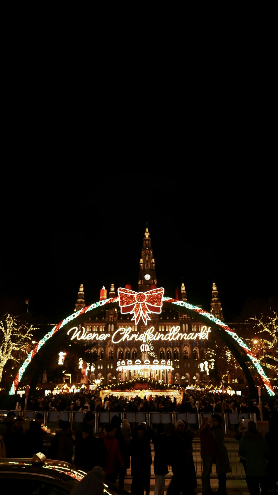
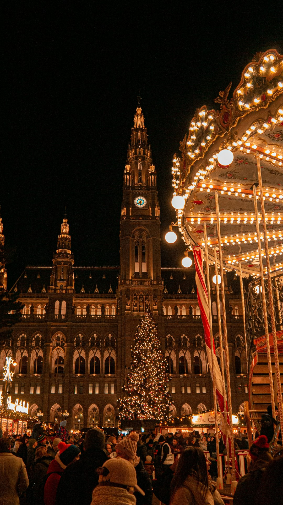
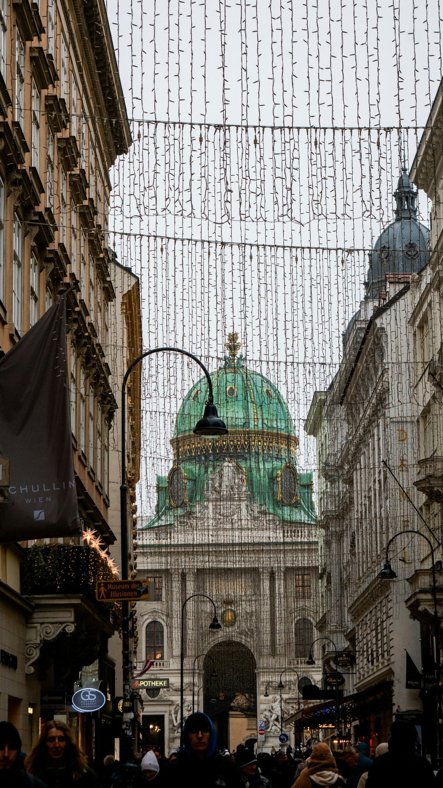
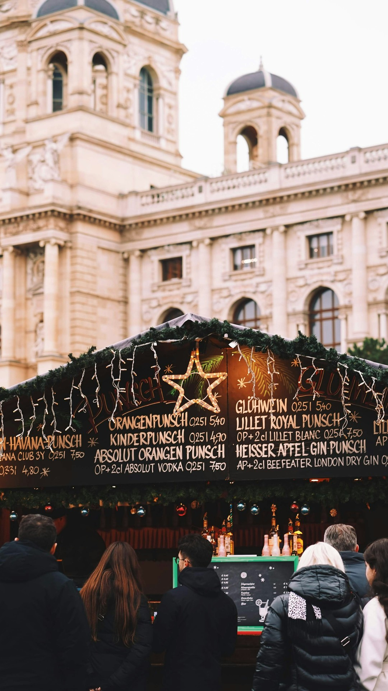
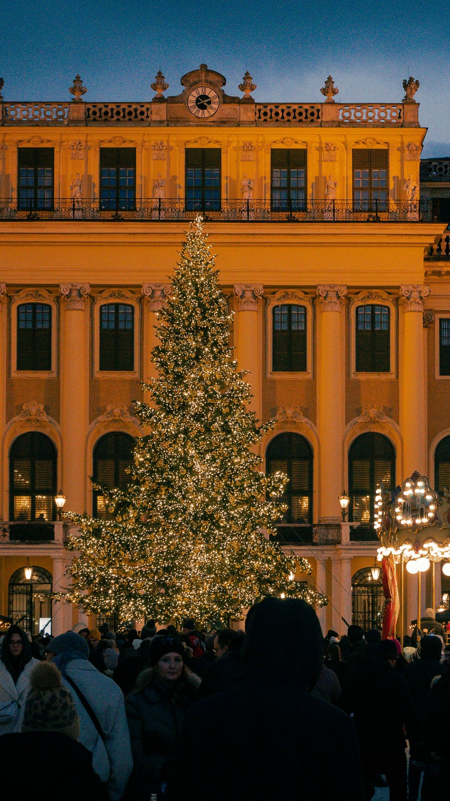
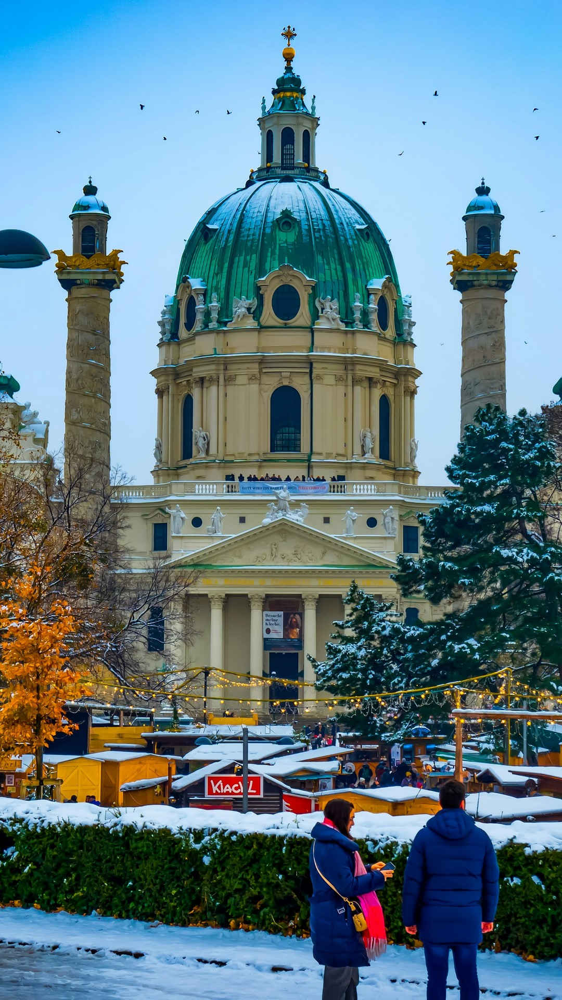
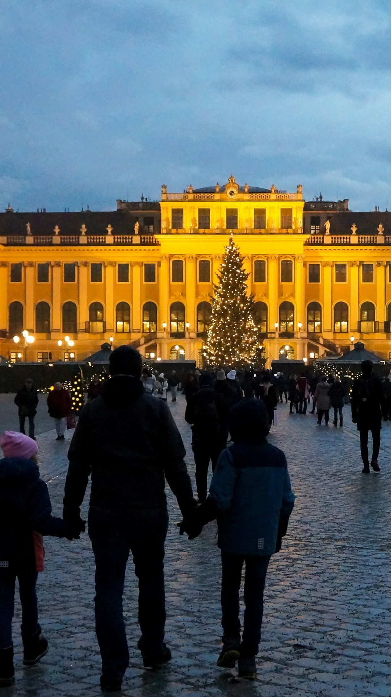

DÍA 1
DÍA 2
DÍA 3
Rathausplatz, Viena
Graben
Stephansplatz
Kohlmarkt, hacia el Hofburg
Maria-Theresien-Platz
Schönbrunn
Belvedere
Karlsplatz
Dos semanas
para el puente
y nadie ha mirado nada.
Tú respira.
Viena, 3 días,
ya organizada.
5 mercadillos de Navidad en la ruta
DÍA 1
El centro, la Catedral
y el Graben
Mercadillo 1 de 5
En la plaza de la Catedral · de 11 a 21 h
DÍA 2
Hofburg, museo
y Naschmarkt
Mercadillo 2 de 5
Entre dos museos · hasta las 21 h
DÍA 3
Schönbrunn
Belvedere
Karlsplatz
Mercadillo 3 de 5
Mercadillo 4 de 5
Mercadillo 5 de 5
En el patio del palacio · de 10 a 21 h
En el parque del palacio · hasta las 21 h
Art Advent, ante la Karlskirche · de 12 a 20 h
VIAJES LISTOS
Este viaje ya está
hecho en Nomad.
Lo copias y le pones tus fechas.
Con audioguía en paseos y museos.
Mándaselo al grupo.
Que nadie diga que no sabía.

Nomad: guía de viajes

Pronto en Android™
Apple, el logotipo de Apple e iPhone son marcas comerciales de Apple Inc., registradas en EE. UU. y en otros países. App Store es una marca de servicio de Apple Inc. Android es una marca comercial de Google LLC.
Enlace en el perfil